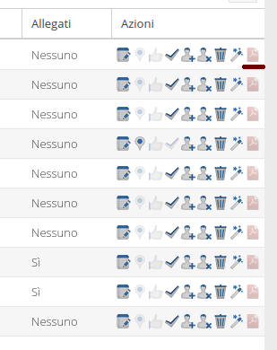

<!DOCKTYPE html>
<html lang="it">
<head>
  <meta charset="utf-8">
  <title>SIMFito</title>
  <link rel="stylesheet" media="all" href="style/custom.css"/>
  <link rel="stylesheet" media="all" href="style/octicons.css"/>
  <link rel="shortcut icon" href=""/>
  <script type="text/javascript" src="js/main.js"></script>
</head>
<body onload="toc.setHF('tbArea'); toc.setHF('footerArea'); toc.setToc('tocArea',1,0);">
  <div class="footer-push">
    <div class="top-bar" id="tbArea"></div>
    <div class="wrapper documents content-push wide">
      <div class="toc", id="tocArea"></div>
      <div class="markdown-body document-content">
        <h3>
          <a id="accesso" class="anchor" href="#accesso" aria-hidden="true">
            <span class="octicon octicon-link"></span>
          </a>
          Scheda in pdf
        </h3>
        <p>
          &nbsp;&nbsp;&nbsp;&nbsp;&Egrave; possibile scaricare un pdf contenenti le informazioni della scheda mediante l&apos;uso dell'apposita icona nella colonna delle
          azioni nella lista delle schede nel <i>tab</i> "Schede".
        </p>
        <p>
          
        </p>
        <p>
          &nbsp;&nbsp;&nbsp;&nbsp;Il pdf potr&aacute; essere scaricato solo se la scheda risulta chiusa.
        </p>
      </div>
    </div>
    <div class="footer-pad"></div>
  </div>
  <footer>
    <div class="footer" id="footerArea"> </div>
  </footer>
</body>
</html>
